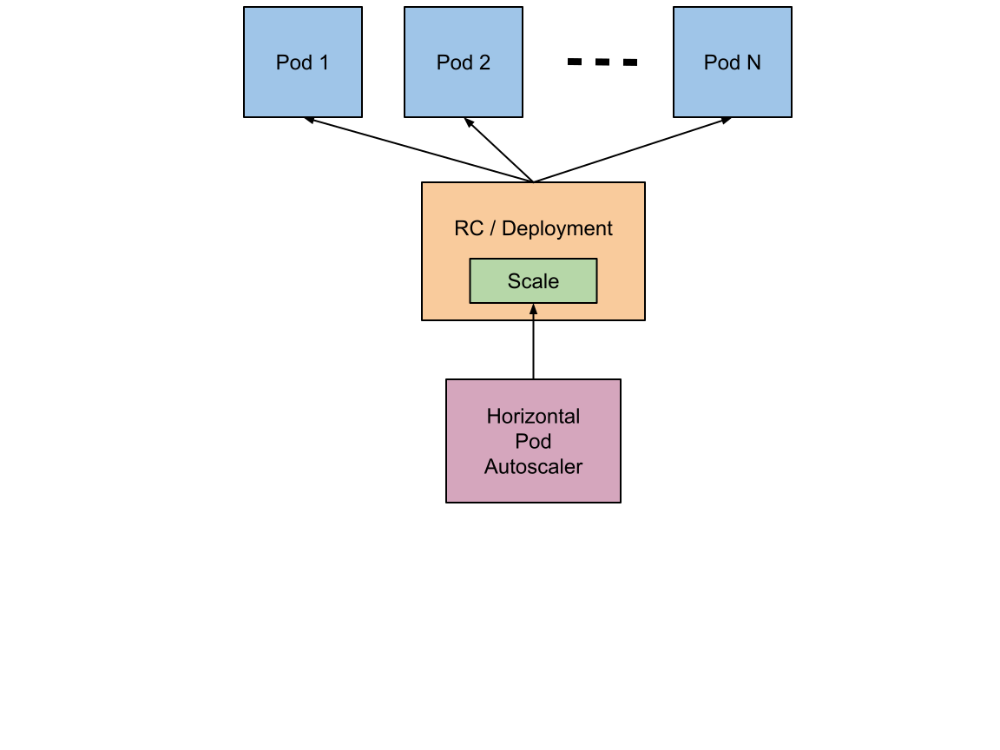

HPA 控制器¶
在前面的学习中我们使用用一个 kubectl scale 命令可以来实现 Pod 的扩缩容功能，但是这个毕竟是完全手动操作的，要应对线上的各种复杂情况，我们需要能够做到自动化去感知业务，来自动进行扩缩容。为此，Kubernetes 也为我们提供了这样的一个资源对象：Horizontal Pod Autoscaling（Pod 水平自动伸缩），简称HPA，HPA 通过监控分析一些控制器控制的所有 Pod 的负载变化情况来确定是否需要调整 Pod 的副本数量，这是 HPA 最基本的原理：

我们可以简单的通过 kubectl autoscale 命令来创建一个 HPA 资源对象，HPA Controller默认30s轮询一次（可通过 kube-controller-manager 的--horizontal-pod-autoscaler-sync-period 参数进行设置），查询指定的资源中的 Pod 资源使用率，并且与创建时设定的值和指标做对比，从而实现自动伸缩的功能。
Metrics Server¶
在 HPA 的第一个版本中，我们需要 Heapster 提供 CPU 和内存指标，在 HPA v2 过后就需要安装 Metrcis Server 了，Metrics Server 可以通过标准的 Kubernetes API 把监控数据暴露出来，有了 Metrics Server 之后，我们就完全可以通过标准的 Kubernetes API 来访问我们想要获取的监控数据了：
https://10.96.0.1/apis/metrics.k8s.io/v1beta1/namespaces/<namespace-name>/pods/<pod-name>比如当我们访问上面的 API 的时候，我们就可以获取到该 Pod 的资源数据，这些数据其实是来自于 kubelet 的 Summary API 采集而来的。不过需要说明的是我们这里可以通过标准的 API 来获取资源监控数据，并不是因为 Metrics Server 就是 APIServer 的一部分，而是通过 Kubernetes 提供的 Aggregator 汇聚插件来实现的，是独立于 APIServer 之外运行的。

聚合 API¶
Aggregator 允许开发人员编写一个自己的服务，把这个服务注册到 Kubernetes 的 APIServer 里面去，这样我们就可以像原生的 APIServer 提供的 API 使用自己的 API 了，我们把自己的服务运行在 Kubernetes 集群里面，然后 Kubernetes 的 Aggregator 通过 Service 名称就可以转发到我们自己写的 Service 里面去了。这样这个聚合层就带来了很多好处：
- 增加了 API 的扩展性，开发人员可以编写自己的 API 服务来暴露他们想要的 API。
- 丰富了 API，核心 kubernetes 团队阻止了很多新的 API 提案，通过允许开发人员将他们的 API 作为单独的服务公开，这样就无须社区繁杂的审查了。
- 开发分阶段实验性 API，新的 API 可以在单独的聚合服务中开发，当它稳定之后，在合并会 APIServer 就很容易了。
- 确保新 API 遵循 Kubernetes 约定，如果没有这里提出的机制，社区成员可能会被迫推出自己的东西，这样很可能造成社区成员和社区约定不一致。
安装¶
所以现在我们要使用 HPA，就需要在集群中安装 Metrics Server 服务，要安装 Metrics Server 就需要开启 Aggregator，因为 Metrics Server 就是通过该代理进行扩展的，不过我们集群是通过 Kubeadm 搭建的，默认已经开启了，如果是二进制方式安装的集群，需要单独配置 kube-apsierver 添加如下所示的参数：
--requestheader-client-ca-file=<path to aggregator CA cert>
--requestheader-allowed-names=aggregator
--requestheader-extra-headers-prefix=X-Remote-Extra-
--requestheader-group-headers=X-Remote-Group
--requestheader-username-headers=X-Remote-User
--proxy-client-cert-file=<path to aggregator proxy cert>
--proxy-client-key-file=<path to aggregator proxy key>如果 kube-proxy 没有和 APIServer 运行在同一台主机上，那么需要确保启用了如下 kube-apsierver 的参数：
--enable-aggregator-routing=true对于这些证书的生成方式，我们可以查看官方文档：https://github.com/kubernetes-sigs/apiserver-builder-alpha/blob/master/docs/concepts/auth.md。
Aggregator 聚合层启动完成后，就可以来安装 Metrics Server 了，我们可以获取该仓库的官方安装资源清单：
$ git clone https://github.com/kubernetes-incubator/metrics-server
$ cd metrics-server
$ kubectl apply -f deploy/1.8+/在部署之前，修改 metrcis-server/deploy/1.8+/metrics-server-deployment.yaml 的镜像地址为：
containers:
- name: metrics-server
image: gcr.azk8s.cn/google_containers/metrics-server-amd64:v0.3.6等部署完成后，可以查看 Pod 日志是否正常：
$ kubectl get pods -n kube-system -l k8s-app=metrics-server
NAME READY STATUS RESTARTS AGE
metrics-server-6886856d7c-g5k6q 1/1 Running 0 2m39s
$ kubectl logs -f metrics-server-6886856d7c-g5k6q -n kube-system
......
E1119 09:05:57.234312 1 manager.go:111] unable to fully collect metrics: [unable to fully scrape metrics from source kubelet_summary:ydzs-node1: unable to fetch metrics from Kubelet ydzs-node1 (ydzs-node1): Get https://ydzs-node1:10250/stats/summary?only_cpu_and_memory=true: dial tcp: lookup ydzs-node1 on 10.96.0.10:53: no such host, unable to fully scrape metrics from source kubelet_summary:ydzs-node4: unable to fetch metrics from Kubelet ydzs-node4 (ydzs-node4): Get https://ydzs-node4:10250/stats/summary?only_cpu_and_memory=true: dial tcp: lookup ydzs-node4 on 10.96.0.10:53: no such host, unable to fully scrape metrics from source kubelet_summary:ydzs-node3: unable to fetch metrics from Kubelet ydzs-node3 (ydzs-node3): Get https://ydzs-node3:10250/stats/summary?only_cpu_and_memory=true: dial tcp: lookup ydzs-node3 on 10.96.0.10:53: no such host, unable to fully scrape metrics from source kubelet_summary:ydzs-master: unable to fetch metrics from Kubelet ydzs-master (ydzs-master): Get https://ydzs-master:10250/stats/summary?only_cpu_and_memory=true: dial tcp: lookup ydzs-master on 10.96.0.10:53: no such host, unable to fully scrape metrics from source kubelet_summary:ydzs-node2: unable to fetch metrics from Kubelet ydzs-node2 (ydzs-node2): Get https://ydzs-node2:10250/stats/summary?only_cpu_and_memory=true: dial tcp: lookup ydzs-node2 on 10.96.0.10:53: no such host]我们可以发现 Pod 中出现了一些错误信息：xxx: no such host，我们看到这个错误信息一般就可以确定是 DNS 解析不了造成的，我们可以看到 Metrics Server 会通过 kubelet 的 10250 端口获取信息，使用的是 hostname，我们部署集群的时候在节点的 /etc/hosts 里面添加了节点的 hostname 和 ip 的映射，但是是我们的 Metrics Server 的 Pod 内部并没有这个 hosts 信息，当然也就不识别 hostname 了，要解决这个问题，有两种方法：
第一种方法就是在集群内部的 DNS 服务里面添加上 hostname 的解析，比如我们这里集群中使用的是 CoreDNS，我们就可以去修改下 CoreDNS 的 Configmap 信息，添加上 hosts 信息：
$ kubectl edit configmap coredns -n kube-system
apiVersion: v1
data:
Corefile: |
.:53 {
errors
health
hosts { # 添加集群节点hosts隐射信息
10.151.30.11 ydzs-master
10.151.30.57 ydzs-node3
10.151.30.59 ydzs-node4
10.151.30.22 ydzs-node1
10.151.30.23 ydzs-node2
fallthrough
}
kubernetes cluster.local in-addr.arpa ip6.arpa {
pods insecure
upstream
fallthrough in-addr.arpa ip6.arpa
}
prometheus :9153
proxy . /etc/resolv.conf
cache 30
reload
}
kind: ConfigMap
metadata:
creationTimestamp: 2019-05-18T11:07:46Z
name: coredns
namespace: kube-system这样当在集群内部访问集群的 hostname 的时候就可以解析到对应的 ip 了，另外一种方法就是在 metrics-server 的启动参数中修改 kubelet-preferred-address-types 参数，如下：
args:
- --cert-dir=/tmp
- --secure-port=4443
- --kubelet-preferred-address-types=InternalIP我们这里使用第二种方式，然后重新安装：
$ kubectl get pods -n kube-system -l k8s-app=metrics-server
NAME READY STATUS RESTARTS AGE
metrics-server-6dcfdf89b5-tvdcp 1/1 Running 0 33s
$ kubectl logs -f metric-metrics-server-58fc94d9f-jlxcb -n kube-system
......
E1119 09:08:49.805959 1 manager.go:111] unable to fully collect metrics: [unable to fully scrape metrics from source kubelet_summary:ydzs-node3: unable to fetch metrics from Kubelet ydzs-node3 (10.151.30.57): Get https://10.151.30.57:10250/stats/summary?only_cpu_and_memory=true: x509: cannot validate certificate for 10.151.30.57 because it doesn't contain any IP SANs, unable to fully scrape metrics from source kubelet_summary:ydzs-node4: unable to fetch metrics from Kubelet ydzs-node4 (10.151.30.59): Get https://10.151.30.59:10250/stats/summary?only_cpu_and_memory=true: x509: cannot validate certificate for 10.151.30.59 because it doesn't contain any IP SANs, unable to fully scrape metrics from source kubelet_summary:ydzs-node2: unable to fetch metrics from Kubelet ydzs-node2 (10.151.30.23): Get https://10.151.30.23:10250/stats/summary?only_cpu_and_memory=true: x509: cannot validate certificate for 10.151.30.23 because it doesn't contain any IP SANs, unable to fully scrape metrics from source kubelet_summary:ydzs-master: unable to fetch metrics from Kubelet ydzs-master (10.151.30.11): Get https://10.151.30.11:10250/stats/summary?only_cpu_and_memory=true: x509: cannot validate certificate for 10.151.30.11 because it doesn't contain any IP SANs, unable to fully scrape metrics from source kubelet_summary:ydzs-node1: unable to fetch metrics from Kubelet ydzs-node1 (10.151.30.22): Get https://10.151.30.22:10250/stats/summary?only_cpu_and_memory=true: x509: cannot validate certificate for 10.151.30.22 because it doesn't contain any IP SANs]因为部署集群的时候，CA 证书并没有把各个节点的 IP 签上去，所以这里 Metrics Server 通过 IP 去请求时，提示签的证书没有对应的 IP（错误：x509: cannot validate certificate for 10.151.30.22 because it doesn’t contain any IP SANs），我们可以添加一个--kubelet-insecure-tls参数跳过证书校验：
args:
- --cert-dir=/tmp
- --secure-port=4443
- --kubelet-insecure-tls
- --kubelet-preferred-address-types=InternalIP然后再重新安装即可成功！可以通过如下命令来验证：
$ kubectl apply -f deploy/1.8+/
$ kubectl get pods -n kube-system -l k8s-app=metrics-server
NAME READY STATUS RESTARTS AGE
metrics-server-5d4dbb78bb-6klw6 1/1 Running 0 14s
$ kubectl logs -f metrics-server-5d4dbb78bb-6klw6 -n kube-system
I1119 09:10:44.249092 1 serving.go:312] Generated self-signed cert (/tmp/apiserver.crt, /tmp/apiserver.key)
I1119 09:10:45.264076 1 secure_serving.go:116] Serving securely on [::]:4443
$ kubectl get apiservice | grep metrics
v1beta1.metrics.k8s.io kube-system/metrics-server True 9m
$ kubectl get --raw "/apis/metrics.k8s.io/v1beta1/nodes"
{"kind":"NodeMetricsList","apiVersion":"metrics.k8s.io/v1beta1","metadata":{"selfLink":"/apis/metrics.k8s.io/v1beta1/nodes"},"items":[{"metadata":{"name":"ydzs-node3","selfLink":"/apis/metrics.k8s.io/v1beta1/nodes/ydzs-node3","creationTimestamp":"2019-11-19T09:11:53Z"},"timestamp":"2019-11-19T09:11:38Z","window":"30s","usage":{"cpu":"240965441n","memory":"3004360Ki"}},{"metadata":{"name":"ydzs-node4","selfLink":"/apis/metrics.k8s.io/v1beta1/nodes/ydzs-node4","creationTimestamp":"2019-11-19T09:11:53Z"},"timestamp":"2019-11-19T09:11:37Z","window":"30s","usage":{"cpu":"167036681n","memory":"2574664Ki"}},{"metadata":{"name":"ydzs-master","selfLink":"/apis/metrics.k8s.io/v1beta1/nodes/ydzs-master","creationTimestamp":"2019-11-19T09:11:53Z"},"timestamp":"2019-11-19T09:11:38Z","window":"30s","usage":{"cpu":"350907350n","memory":"2986716Ki"}},{"metadata":{"name":"ydzs-node1","selfLink":"/apis/metrics.k8s.io/v1beta1/nodes/ydzs-node1","creationTimestamp":"2019-11-19T09:11:53Z"},"timestamp":"2019-11-19T09:11:39Z","window":"30s","usage":{"cpu":"1319638039n","memory":"2094376Ki"}},{"metadata":{"name":"ydzs-node2","selfLink":"/apis/metrics.k8s.io/v1beta1/nodes/ydzs-node2","creationTimestamp":"2019-11-19T09:11:53Z"},"timestamp":"2019-11-19T09:11:36Z","window":"30s","usage":{"cpu":"320381888n","memory":"3270368Ki"}}]}
$ kubectl top nodes
NAME CPU(cores) CPU% MEMORY(bytes) MEMORY%
ydzs-master 351m 17% 2916Mi 79%
ydzs-node1 1320m 33% 2045Mi 26%
ydzs-node2 321m 8% 3193Mi 41%
ydzs-node3 241m 6% 2933Mi 37%
ydzs-node4 168m 4% 2514Mi 32% 现在我们可以通过 kubectl top 命令来获取到资源数据了，证明 Metrics Server 已经安装成功了。
HPA¶
现在我们用 Deployment 来创建一个 Nginx Pod，然后利用 HPA 来进行自动扩缩容。资源清单如下所示：（hpa-demo.yaml）
apiVersion: apps/v1
kind: Deployment
metadata:
name: hpa-demo
spec:
selector:
matchLabels:
app: nginx
template:
metadata:
labels:
app: nginx
spec:
containers:
- name: nginx
image: nginx
ports:
- containerPort: 80然后直接创建 Deployment：
$ kubectl apply -f hpa-demo.yaml
deployment.apps/hpa-demo created
$ kubectl get pods -l app=nginx
NAME READY STATUS RESTARTS AGE
hpa-demo-85ff79dd56-pz8th 1/1 Running 0 21s现在我们来创建一个 HPA 资源对象，可以使用kubectl autoscale命令来创建：
$ kubectl autoscale deployment hpa-demo --cpu-percent=10 --min=1 --max=10
horizontalpodautoscaler.autoscaling/hpa-demo autoscaled
$ kubectl get hpa
NAME REFERENCE TARGETS MINPODS MAXPODS REPLICAS AGE
hpa-demo Deployment/hpa-demo <unknown>/10% 1 10 1 16s此命令创建了一个关联资源 hpa-demo 的 HPA，最小的 Pod 副本数为1，最大为10。HPA 会根据设定的 cpu 使用率（10%）动态的增加或者减少 Pod 数量。
当然我们依然还是可以通过创建 YAML 文件的形式来创建 HPA 资源对象。如果我们不知道怎么编写的话，可以查看上面命令行创建的HPA的YAML文件：
$ kubectl get hpa hpa-demo -o yaml
apiVersion: autoscaling/v1
kind: HorizontalPodAutoscaler
metadata:
annotations:
autoscaling.alpha.kubernetes.io/conditions: '[{"type":"AbleToScale","status":"True","lastTransitionTime":"2019-11-19T09:15:12Z","reason":"SucceededGetScale","message":"the
HPA controller was able to get the target''s current scale"},{"type":"ScalingActive","status":"False","lastTransitionTime":"2019-11-19T09:15:12Z","reason":"FailedGetResourceMetric","message":"the
HPA was unable to compute the replica count: missing request for cpu"}]'
creationTimestamp: "2019-11-19T09:14:56Z"
name: hpa-demo
namespace: default
resourceVersion: "3094084"
selfLink: /apis/autoscaling/v1/namespaces/default/horizontalpodautoscalers/hpa-demo
uid: b84d79f1-75b0-46e0-95b5-4cbe3509233b
spec:
maxReplicas: 10
minReplicas: 1
scaleTargetRef:
apiVersion: apps/v1
kind: Deployment
name: hpa-demo
targetCPUUtilizationPercentage: 10
status:
currentReplicas: 1
desiredReplicas: 0然后我们可以根据上面的 YAML 文件就可以自己来创建一个基于 YAML 的 HPA 描述文件了。但是我们发现上面信息里面出现了一些 Fail 信息，我们来查看下这个 HPA 对象的信息：
$ kubectl describe hpa hpa-demo
Name: hpa-demo
Namespace: default
Labels: <none>
Annotations: <none>
CreationTimestamp: Tue, 19 Nov 2019 17:14:56 +0800
Reference: Deployment/hpa-demo
Metrics: ( current / target )
resource cpu on pods (as a percentage of request): <unknown> / 10%
Min replicas: 1
Max replicas: 10
Deployment pods: 1 current / 0 desired
Conditions:
Type Status Reason Message
---- ------ ------ -------
AbleToScale True SucceededGetScale the HPA controller was able to get the target's current scale
ScalingActive False FailedGetResourceMetric the HPA was unable to compute the replica count: missing request for cpu
Events:
Type Reason Age From Message
---- ------ ---- ---- -------
Warning FailedGetResourceMetric 14s (x4 over 60s) horizontal-pod-autoscaler missing request for cpu
Warning FailedComputeMetricsReplicas 14s (x4 over 60s) horizontal-pod-autoscaler invalid metrics (1 invalid out of 1), first error is: failed to get cpu utilization: missing request for cpu我们可以看到上面的事件信息里面出现了 failed to get cpu utilization: missing request for cpu 这样的错误信息。这是因为我们上面创建的 Pod 对象没有添加 request 资源声明，这样导致 HPA 读取不到 CPU 指标信息，所以如果要想让 HPA 生效，对应的 Pod 资源必须添加 requests 资源声明，更新我们的资源清单文件：
apiVersion: apps/v1
kind: Deployment
metadata:
name: hpa-demo
spec:
selector:
matchLabels:
app: nginx
template:
metadata:
labels:
app: nginx
spec:
containers:
- name: nginx
image: nginx
ports:
- containerPort: 80
resources:
requests:
memory: 50Mi
cpu: 50m然后重新更新 Deployment，重新创建 HPA 对象：
$ kubectl apply -f hpa.yaml
deployment.apps/hpa-demo configured
$ kubectl get pods -o wide -l app=nginx
NAME READY STATUS RESTARTS AGE IP NODE NOMINATED NODE READINESS GATES
hpa-demo-69968bb59f-twtdp 1/1 Running 0 4m11s 10.244.4.97 ydzs-node4 <none> <none>
$ kubectl delete hpa hpa-demo
horizontalpodautoscaler.autoscaling "hpa-demo" deleted
$ kubectl autoscale deployment hpa-demo --cpu-percent=10 --min=1 --max=10
horizontalpodautoscaler.autoscaling/hpa-demo autoscaled
$ kubectl describe hpa hpa-demo
Name: hpa-demo
Namespace: default
Labels: <none>
Annotations: <none>
CreationTimestamp: Tue, 19 Nov 2019 17:23:49 +0800
Reference: Deployment/hpa-demo
Metrics: ( current / target )
resource cpu on pods (as a percentage of request): 0% (0) / 10%
Min replicas: 1
Max replicas: 10
Deployment pods: 1 current / 1 desired
Conditions:
Type Status Reason Message
---- ------ ------ -------
AbleToScale True ScaleDownStabilized recent recommendations were higher than current one, applying the highest recent recommendation
ScalingActive True ValidMetricFound the HPA was able to successfully calculate a replica count from cpu resource utilization (percentage of request)
ScalingLimited False DesiredWithinRange the desired count is within the acceptable range
Events: <none>
$ kubectl get hpa
NAME REFERENCE TARGETS MINPODS MAXPODS REPLICAS AGE
hpa-demo Deployment/hpa-demo 0%/10% 1 10 1 52s现在可以看到 HPA 资源对象已经正常了，现在我们来增大负载进行测试，我们来创建一个 busybox 的 Pod，并且循环访问上面创建的 Pod：
$ kubectl run -it --image busybox test-hpa --restart=Never --rm /bin/sh
If you don't see a command prompt, try pressing enter.
/ # while true; do wget -q -O- http://10.244.4.97; done下图可以看到，HPA 已经开始工作：
$ kubectl get hpa
NAME REFERENCE TARGETS MINPODS MAXPODS REPLICAS AGE
hpa-demo Deployment/hpa-demo 338%/10% 1 10 1 5m15s
$ kubectl get pods -l app=nginx --watch
NAME READY STATUS RESTARTS AGE
hpa-demo-69968bb59f-8hjnn 1/1 Running 0 22s
hpa-demo-69968bb59f-9ss9f 1/1 Running 0 22s
hpa-demo-69968bb59f-bllsd 1/1 Running 0 22s
hpa-demo-69968bb59f-lnh8k 1/1 Running 0 37s
hpa-demo-69968bb59f-r8zfh 1/1 Running 0 22s
hpa-demo-69968bb59f-twtdp 1/1 Running 0 6m43s
hpa-demo-69968bb59f-w792g 1/1 Running 0 37s
hpa-demo-69968bb59f-zlxkp 1/1 Running 0 37s
hpa-demo-69968bb59f-znp6q 0/1 ContainerCreating 0 6s
hpa-demo-69968bb59f-ztnvx 1/1 Running 0 6s
我们可以看到已经自动拉起了很多新的 Pod，最后定格在了我们上面设置的 10 个 Pod，同时查看资源 hpa-demo 的副本数量，副本数量已经从原来的1变成了10个：
$ kubectl get deployment hpa-demo
NAME READY UP-TO-DATE AVAILABLE AGE
hpa-demo 10/10 10 10 17m查看 HPA 资源的对象了解工作过程：
$ kubectl describe hpa hpa-demo
Name: hpa-demo
Namespace: default
Labels: <none>
Annotations: <none>
CreationTimestamp: Tue, 19 Nov 2019 17:23:49 +0800
Reference: Deployment/hpa-demo
Metrics: ( current / target )
resource cpu on pods (as a percentage of request): 0% (0) / 10%
Min replicas: 1
Max replicas: 10
Deployment pods: 10 current / 10 desired
Conditions:
Type Status Reason Message
---- ------ ------ -------
AbleToScale True ScaleDownStabilized recent recommendations were higher than current one, applying the highest recent recommendation
ScalingActive True ValidMetricFound the HPA was able to successfully calculate a replica count from cpu resource utilization (percentage of request)
ScalingLimited True TooManyReplicas the desired replica count is more than the maximum replica count
Events:
Type Reason Age From Message
---- ------ ---- ---- -------
Normal SuccessfulRescale 5m45s horizontal-pod-autoscaler New size: 4; reason: cpu resource utilization (percentage of request) above target
Normal SuccessfulRescale 5m30s horizontal-pod-autoscaler New size: 8; reason: cpu resource utilization (percentage of request) above target
Normal SuccessfulRescale 5m14s horizontal-pod-autoscaler New size: 10; reason: cpu resource utilization (percentage of request) above target同样的这个时候我们来关掉 busybox 来减少负载，然后等待一段时间观察下 HPA 和 Deployment 对象：
$ kubectl get hpa
NAME REFERENCE TARGETS MINPODS MAXPODS REPLICAS AGE
hpa-demo Deployment/hpa-demo 0%/10% 1 10 1 14m
$ kubectl get deployment hpa-demo
NAME READY UP-TO-DATE AVAILABLE AGE
hpa-demo 1/1 1 1 24m缩放间隙
从 Kubernetes v1.12 版本开始我们可以通过设置 kube-controller-manager 组件的--horizontal-pod-autoscaler-downscale-stabilization 参数来设置一个持续时间，用于指定在当前操作完成后，HPA 必须等待多长时间才能执行另一次缩放操作。默认为5分钟，也就是默认需要等待5分钟后才会开始自动缩放。
可以看到副本数量已经由 10 变为 1，当前我们只是演示了 CPU 使用率这一个指标，在后面的课程中我们还会学习到根据自定义的监控指标来自动对 Pod 进行扩缩容。